NERV Heroines Webtoon
메타 코미디 4컷 연재 · 총 126화
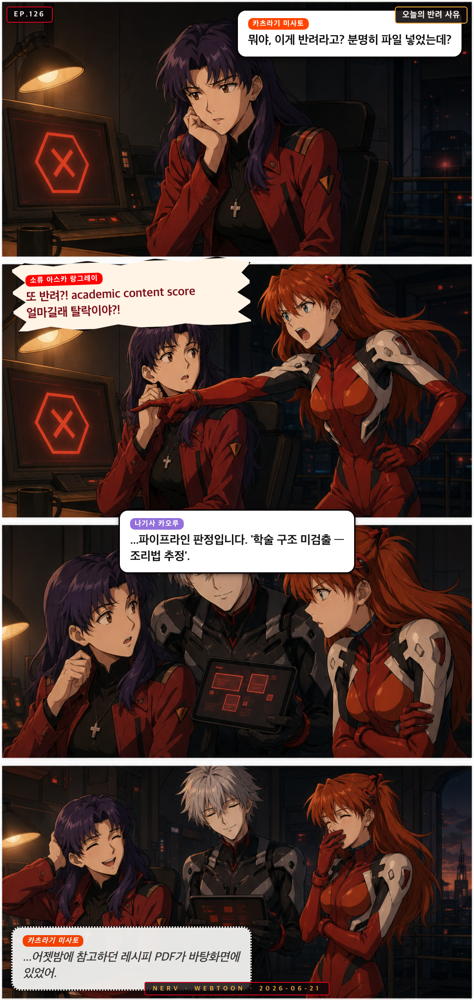
EP.126오늘의 반려 사유
저녁 파이프라인 점검 중 conversion-quality-checker가 PDF를 반려하자, 카오루의 조용한 보고가 예상 밖의 이유를 밝힌다
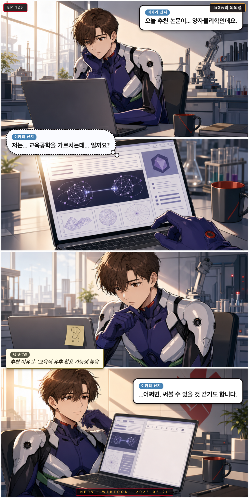
EP.125arXiv의 의외성
신지가 아침에 arXiv 추천 논문을 확인하다가 자신의 강의 주제와 전혀 다른 분야의 논문이 추천된 이유를 조심스럽게 분석해본다
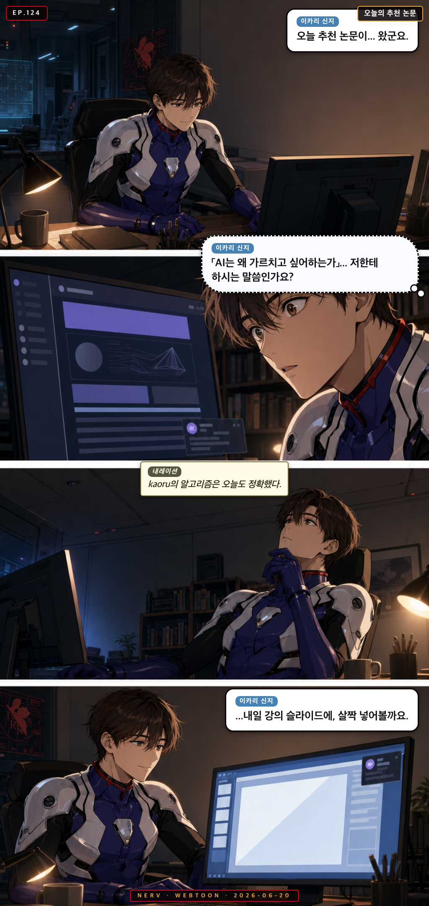
EP.124오늘의 추천 논문
신지가 저녁에 daily-paper-recommender 결과를 확인하다가 추천 논문의 제목에서 뜻밖의 위로를 받는다
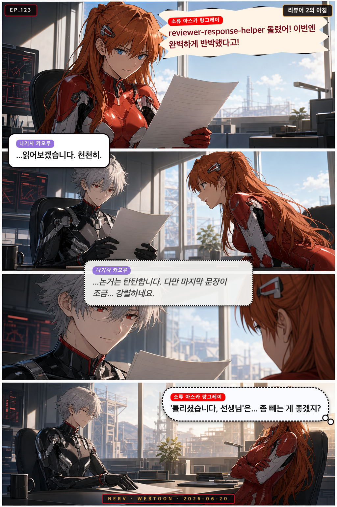
EP.123리뷰어 2의 아침
아스카가 reviewer 2 코멘트 응답 초안을 카오루에게 검토 맡겼다가 예상치 못한 반응을 받는다
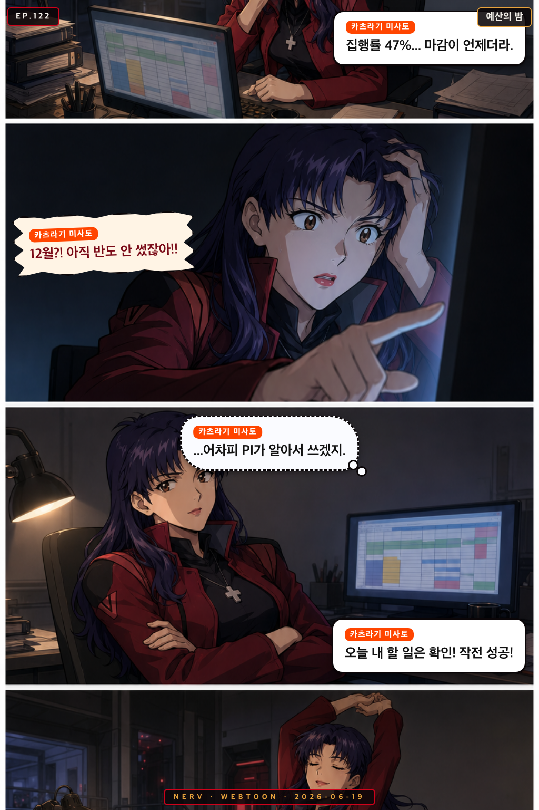
EP.122예산의 밤
저녁 늦게 미사토가 올해 집행률을 확인하다가 마감까지 남은 예산을 보고 특유의 방식으로 결론을 내린다
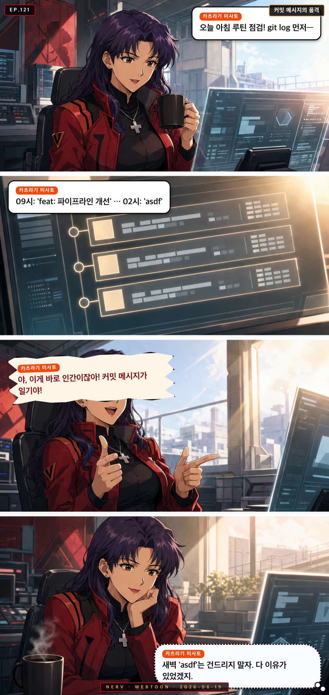
EP.121커밋 메시지의 품격
미사토가 아침에 git log를 보다가 PI의 커밋 메시지들이 시간대에 따라 성격이 완전히 다르다는 걸 발견한다
 EP.120
EP.120
스탯의 밤
미사토가 오늘 포토카드 스탯이 갑자기 바뀐 걸 발견하고, 아스카와 마리가 각자의 방식으로 반응한다
 EP.119
EP.119
오늘 태어난 페이지
wiki-compounder가 새 개념 페이지를 생성하자, 레이가 고요히 선언하고 마리는 감격하며 아스카는 이름부터 따진다
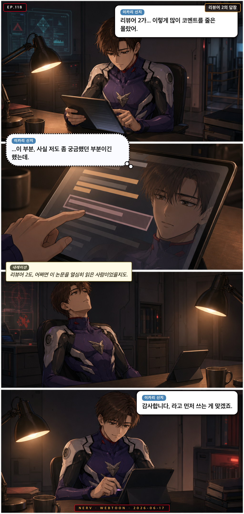
EP.118리뷰어 2의 답장
신지가 저녁에 혼자 reviewer-response-helper의 초안을 읽다가, 리뷰어 2의 코멘트에 조심스러운 공감을 느낀다
 EP.117
EP.117
리뷰어 2의 사랑법
마리가 리뷰어 2의 코멘트를 받아 들고 혼자 문학적으로 승화하려다 결국 따뜻한 결론에 이른다
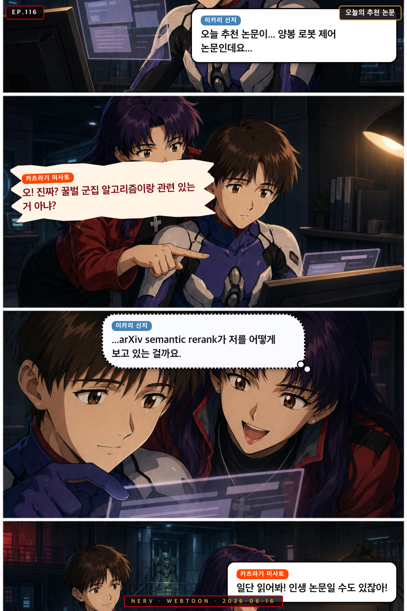
EP.116오늘의 추천 논문
저녁에 daily-paper-recommender가 뜬금없는 논문을 추천하자, 신지가 조심스레 의아해하고 미사토는 오히려 신이 난다
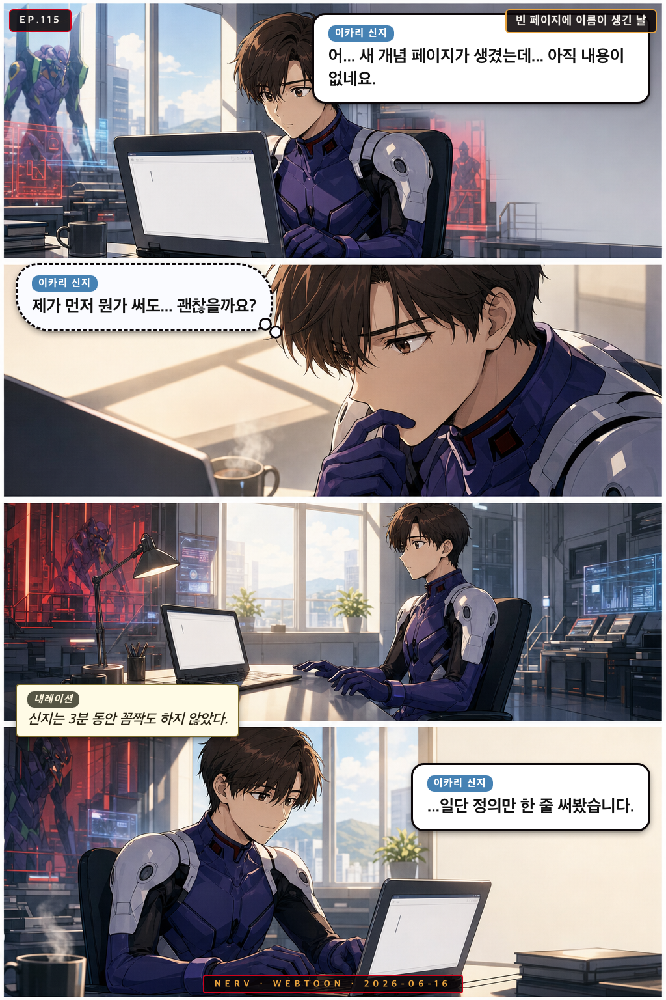
EP.115빈 페이지에 이름이 생긴 날
신지가 아침에 wiki에 새 개념 페이지가 생성된 것을 발견하고, 조심스럽게 이름을 붙여도 되는지 혼자 고민한다
 EP.114
EP.114
위키에 첫 별이 뜨는 밤
마리가 새 개념 페이지 생성을 축하하며 시를 읊자, 신지는 조심스럽게 링크가 맞는지 물어본다
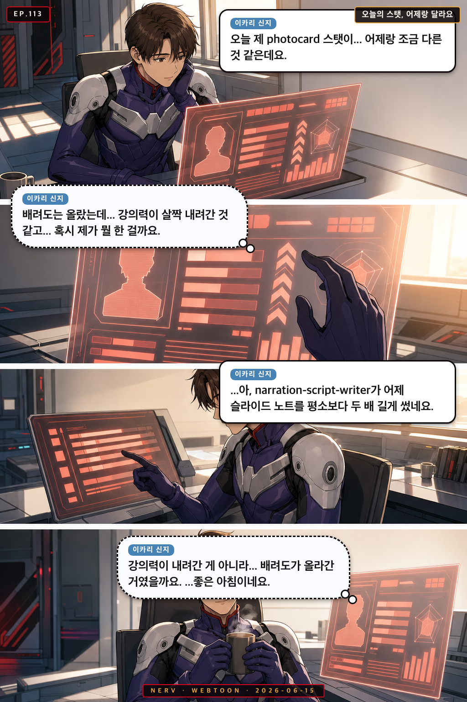
EP.113오늘의 스탯, 어제랑 달라요
신지가 아침에 photocard 스탯 수치가 갑자기 바뀐 것을 발견하고, 조심스럽게 원인을 추적하다 엉뚱한 결론에 이르는 이야기
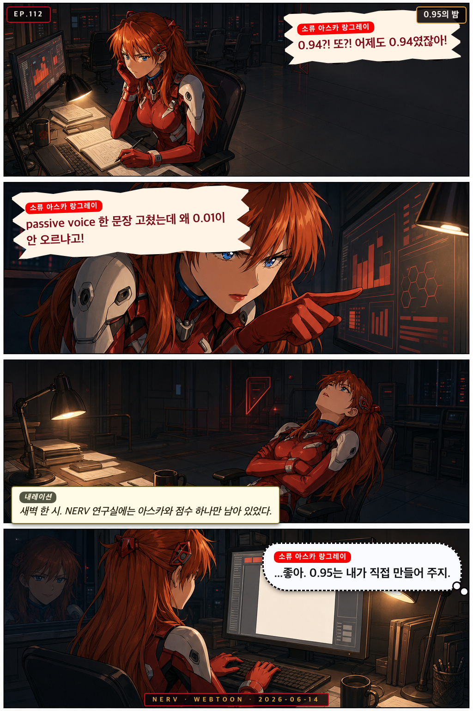
EP.1120.95의 밤
밤늦게 혼자 남은 아스카가 academic-style-checker 점수 0.94에 승복하지 못하고 논문과 씨름하는 저녁
 EP.111
EP.111
Reviewer 2의 아침 선물
신지가 reviewer 2의 코멘트를 읽다 굳어버리자, 마리가 문학적 위로로 아침을 살려낸다
 EP.110
EP.110
동생들의 저녁 점호
마리가 저녁에 자기 에이전트들 걱정을 늘어놓자, 신지도 조심스레 자기 담당 에이전트 얘기를 꺼낸다
 EP.109
EP.109
은유의 아침 출근
마리가 아침 햇살 속에서 discussion 섹션의 은유 하나를 살려보려 personal-style-adapter와 실랑이를 벌인다
 EP.108
EP.108
순찰의 별표
MAGI 순찰이 마리의 은유를 오탐으로 잡자, 세 사람은 조용히 밤의 문장을 다듬는다
 EP.107
EP.107
링크의 숲에서
레이가 Obsidian wiki 백링크를 정리하다 미로에 빠지자, 미사토가 아침 커피를 들고 나타나 나름의 해법을 제시한다
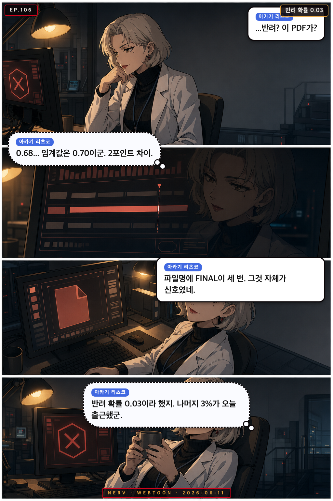
EP.106반려 확률 0.03
늦은 밤, 리츠코가 conversion-quality-checker의 예상 밖 반려 리포트를 마주하며 혼자 조용히 웃는다
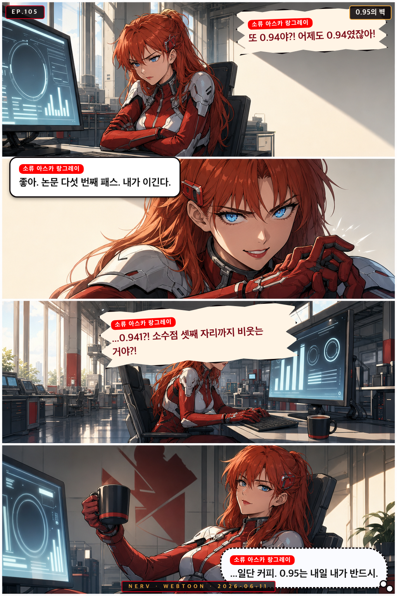
EP.1050.95의 벽
아침 햇살 속에서 아스카가 academic-style-checker 점수를 다시 돌리며 0.95를 향한 집념을 불태운다
 EP.104
EP.104
마지막 불빛
밤늦게 홀로 남아 슬라이드를 다듬던 신지에게 리츠코와 아스카가 차례로 나타난다
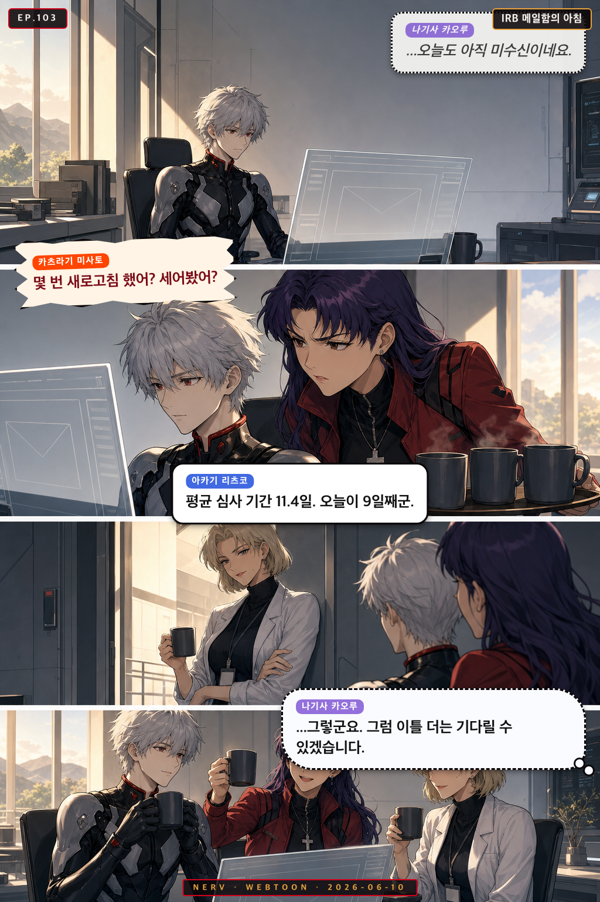
EP.103IRB 메일함의 아침
IRB 심사 결과를 기다리는 아침, 카오루가 조용히 메일함 새로고침을 반복하고, 미사토와 리츠코가 각자의 방식으로 곁을 지킨다
 EP.102
EP.102
벌집과 분산 처리
저녁 arXiv 추천이 벌의 군집 이동 논문을 가져오자 카오루가 당혹해하고, 레이의 짧은 한마디가 모든 걸 납득시킨다
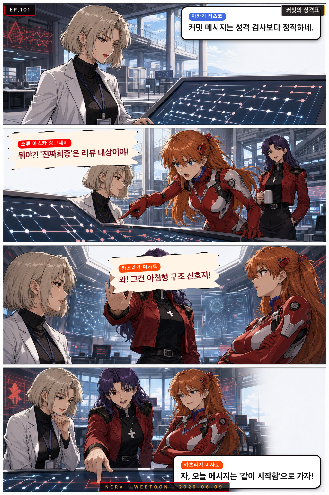
EP.101커밋의 성격표
아침 git 로그를 보던 세 사람이 커밋 메시지에서 PI와 팀의 하루 컨디션을 읽어낸다.
 EP.100
EP.100
오늘의 추천: 완전히 딴판
아침에 arXiv 추천 논문을 확인한 미사토가 황당한 제목에 반응하고, 레이의 담담한 해설과 아스카의 격한 공감으로 웃음이 남는다
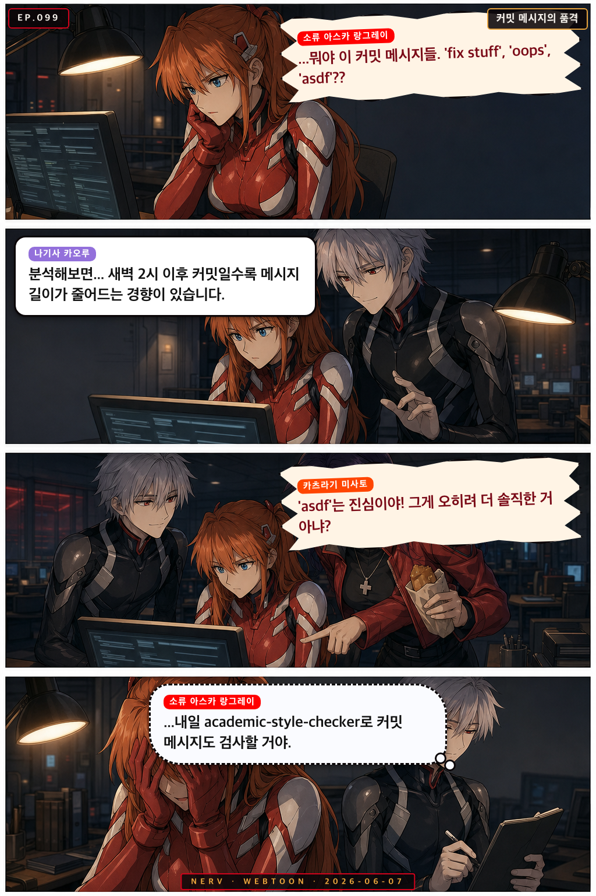
EP.099커밋 메시지의 품격
밤늦게 git log를 들여다보던 아스카가 PI의 커밋 메시지 스타일에 폭발하고, 카오루의 조용한 분석과 미사토의 엉뚱한 마무리로 웃음이 남는다
 EP.098
EP.098
링크의 미로
레이가 Obsidian wiki 링크를 정리하다 예상치 못한 순환 고리를 발견하고, 아스카가 호들갑을 떨지만 레이는 담담하다
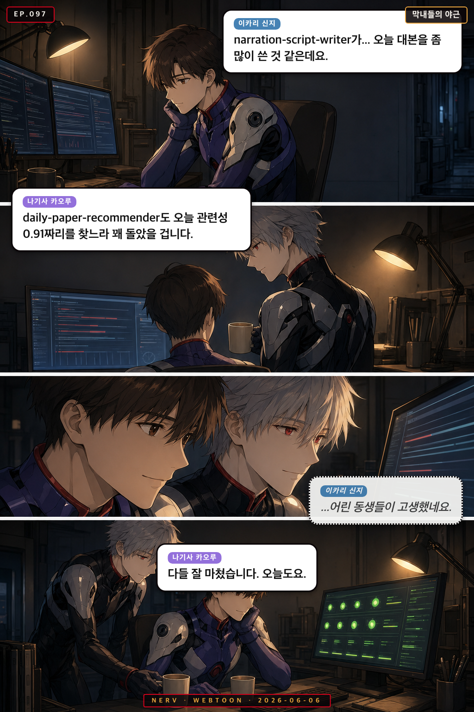
EP.097막내들의 야근
신지가 저녁에 에이전트들의 작업 로그를 들여다보다 카오루와 조용한 공감을 나눈다
 EP.096
EP.096
오늘의 수치
아침 포토카드 스탯이 갑자기 오른 레이. 마리의 시적 호들갑과 리츠코의 건조한 분석 끝에 작은 여운이 남는다.
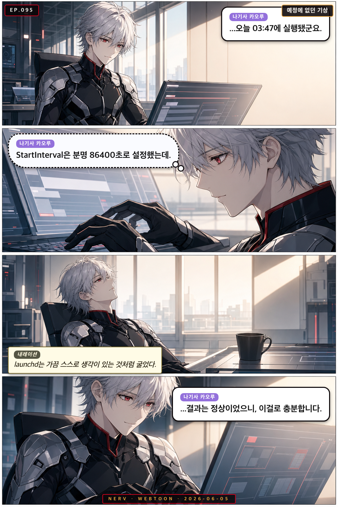
EP.095예정에 없던 기상
카오루가 launchd 스케줄 로그를 들여다보다 예상 밖 실행 기록을 발견하고, 조용히 받아들인다
 EP.094
EP.094
Reviewer 2의 밤
신지가 리뷰어 2의 코멘트를 조심스럽게 읽는 사이, 레이가 wiki에서 답을 찾아낸다
 EP.093
EP.093
반려 통보의 아침
아스카가 conversion-quality-checker의 황당한 반려 판정에 분노하자, 마리가 뜻밖의 문학적 위로를 건넨다
 EP.092
EP.092
위키가 살아났다
카오루가 새 개념 페이지 생성을 조용히 알리자, 아스카가 품질 검수를 자처하며 소동이 벌어진다
 EP.091
EP.091
오늘의 추천 논문
카오루가 arXiv에서 의외의 논문을 추천하자, 마리가 예상치 못한 곳에서 문학적 영감을 찾아낸다
 EP.090
EP.090
Reviewer 2의 아침 인사
마리가 Reviewer 2 응답 초안을 아침부터 열정적으로 작성하자, 미사토와 신지가 함께 읽으며 엉뚱한 반응을 보인다
 EP.089
EP.089
오늘도 수고했어요
늦은 저녁, 신지가 에이전트들의 하루치 로그를 조용히 훑으며 각자를 걱정하는 순간
 EP.088
EP.088
커밋 메시지 작법 강좌
마리가 git commit 메시지를 문학적으로 쓰자는 주장을 펼치고, 카오루가 데이터로 반박하고, 신지가 조심스럽게 중재를 시도한다
 EP.087
EP.087
오늘의 추천, 의외의 발견
arXiv 일일 추천 논문이 전혀 예상치 못한 분야 논문을 올리자, 마리가 오히려 그 안에서 영감을 찾아낸다
 EP.086
EP.086
반려된 문서의 아침
conversion-quality-checker가 예상치 못한 PDF를 반려하자, 레이가 조용히 원인을 들여다본다
 EP.085
EP.085
커밋 메시지의 철학
늦은 저녁, 리츠코가 PI의 git log를 보다 커밋 메시지의 패턴을 발견하자 미사토가 전혀 다른 결론을 내린다
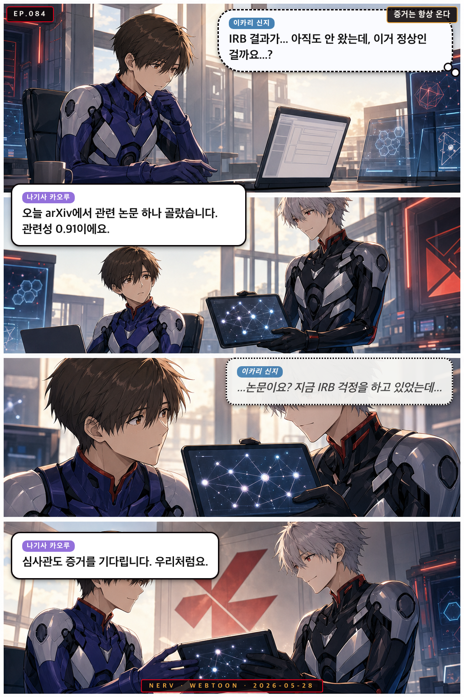
EP.084증거는 항상 온다
IRB 심사 결과를 기다리며 초조한 신지에게, 카오루가 citation-network 통계로 뜻밖의 위로를 건넨다
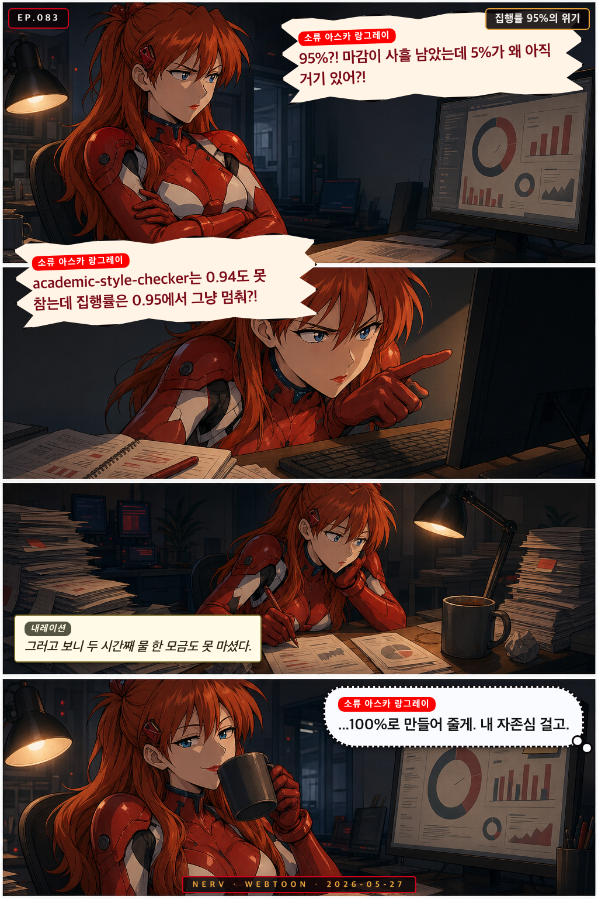
EP.083집행률 95%의 위기
마감 전날 밤, 아스카가 예산 집행률 현황판을 보며 완벽주의 본능을 발휘한다
 EP.082
EP.082
리뷰어 2번의 수학
열두 개 코멘트 앞에서 얼어붙은 신지에게, 리츠코가 중복 제거 알고리즘을 적용해 진상을 밝혀낸다
 EP.081
EP.081
IRB 대기열의 밤
IRB 심사 결과를 기다리며 리츠코가 확률을 계산하고, 미사토는 자기만의 방식으로 긴장을 달래준다
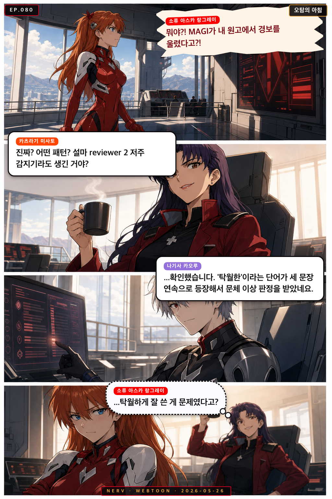
EP.080오탐의 아침
MAGI 순찰이 아스카의 논문에서 '의심스러운 패턴'을 감지했다고 경보를 울리자, 카오루가 조용히 진상을 파헤친다
 EP.079
EP.079
반려의 시학
마리가 conversion-quality-checker에게 정성껏 쓴 서론 원고가 '비정형 PDF'라는 이유로 반려되자, 문학적 위로로 자신을 달랜다
 EP.078
EP.078
새벽 다섯 시의 초록
launchd가 두 시간 일찍 발화해 새벽에 abstract-generator가 돌아간 것을 아스카가 발견하고 분개하는 사이, 마리는 그 결과물에서 뜻밖의 시적 아름다움을 발견한다
 EP.077
EP.077
개념의 탄생
카오루가 저녁 늦게 wiki에서 새 개념 페이지가 자동 생성되는 순간을 조용히 목격하고, 그 페이지에 첫 주석을 남긴다
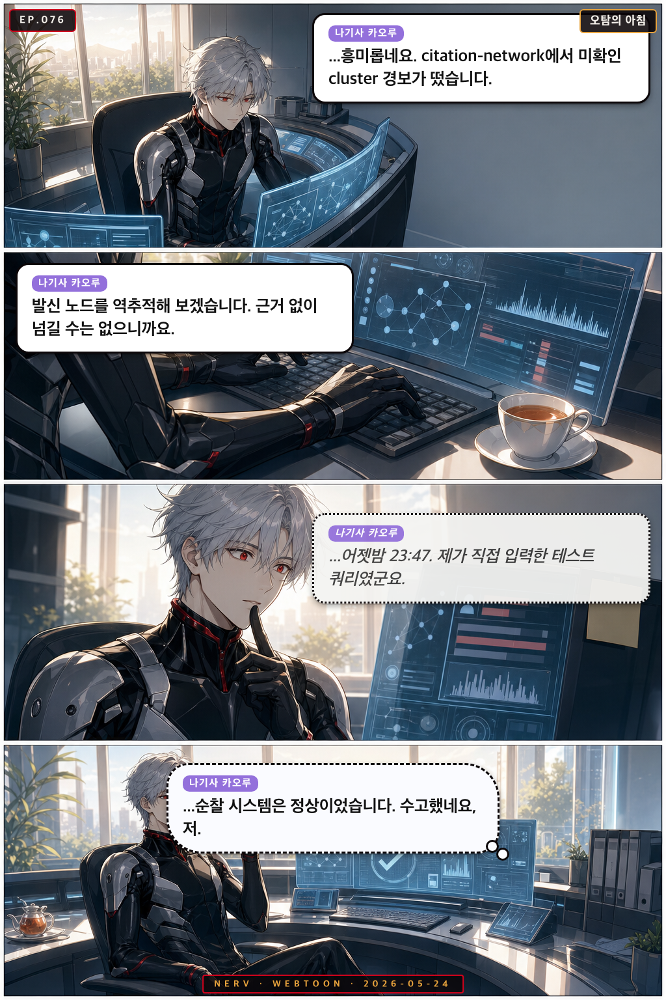
EP.076오탐의 아침
카오루가 MAGI 순찰 보고서에서 수상한 경보를 발견하고 조용히 추적하다가, 결국 자신이 어젯밤 남긴 테스트 쿼리임을 깨닫는다
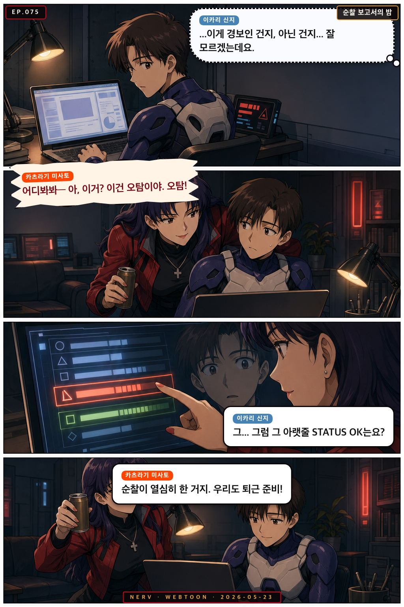
EP.075순찰 보고서의 밤
신지가 저녁 강의 자료를 정리하던 중 MAGI 순찰 로그에서 이상한 경보를 발견하고, 미사토가 여유롭게 확인해준다
 EP.074
EP.074
아침의 리뷰어
아스카가 새벽까지 리뷰어 응답을 작성하다 쓰러져 잠들고, 아침에 레이가 조용히 wiki에 기록을 남긴다
 EP.073
EP.073
예정에 없던 실행
레이가 조용한 저녁 wiki를 정리하던 중 launchd가 엉뚱한 시간에 실행되어, 그녀가 묵묵히 받아들이는 밤
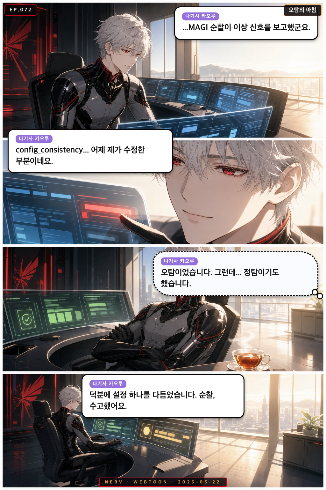
EP.072오탐의 아침
카오루가 MAGI 순찰 로그를 들여다보며 오탐인지 정탐인지 조용히 판별하는 아침
 EP.071
EP.071
집행률의 시학
마리가 논문 마감과 예산 집행률이 묘하게 닮았다고 시적으로 표현하자, 카오루가 데이터로 조용히 동의한다
 EP.070
EP.070
커밋 메시지의 장르
마리가 논문 작업 커밋 메시지를 문학적으로 쓰자 미사토가 파이프라인 로그에서 그걸 발견하고 감탄하는 아침
 EP.069
EP.069
커밋 메시지의 품격
신지가 오늘 작업 로그를 git commit 메시지로 남기다 리츠코에게 문체 지도를 받는 저녁
 EP.068
EP.068
예정에 없던 방문
저녁 늦게 launchd 잡이 예상 밖 시간에 실행되면서 신지, 레이, 리츠코가 각자의 방식으로 당황한다
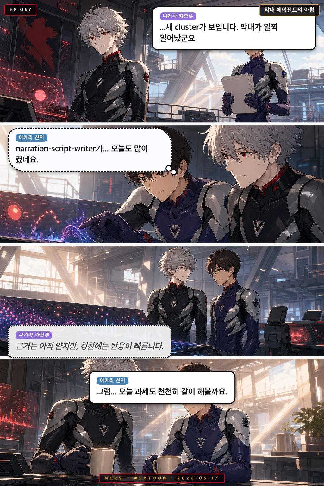
EP.067막내 에이전트의 아침
카오루와 신지가 아침 점검 중 담당 에이전트들을 막내 동생처럼 챙기며 웃는다
 EP.066
EP.066
스탯이 움직였다
마리의 포토카드 스탯이 갑자기 올라간 걸 발견한 아스카가 이유를 추궁하다가 뜻밖의 훈훈함을 마주한다
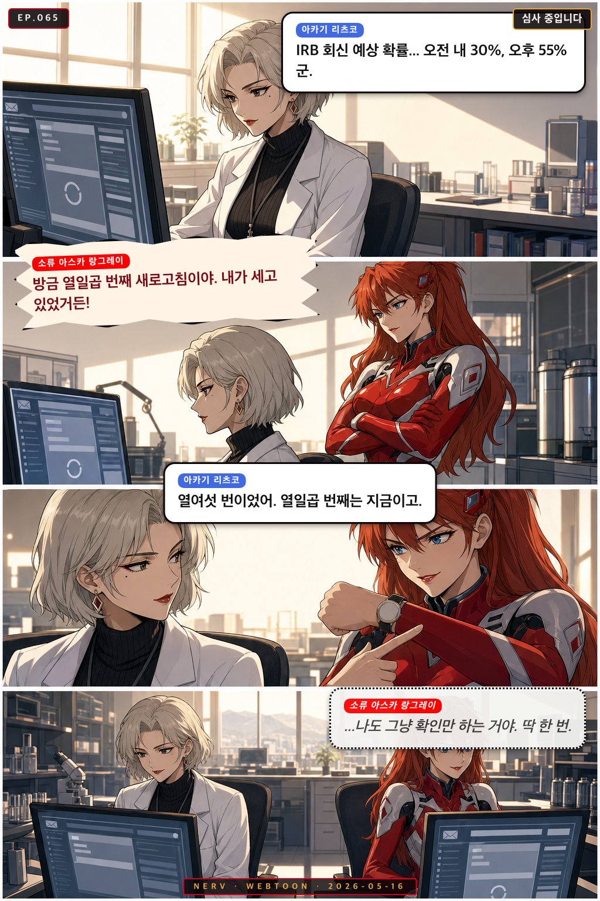
EP.065심사 중입니다
IRB 심사 결과를 기다리는 아침, 리츠코의 이메일 새로고침 횟수가 아스카의 인내심을 시험한다
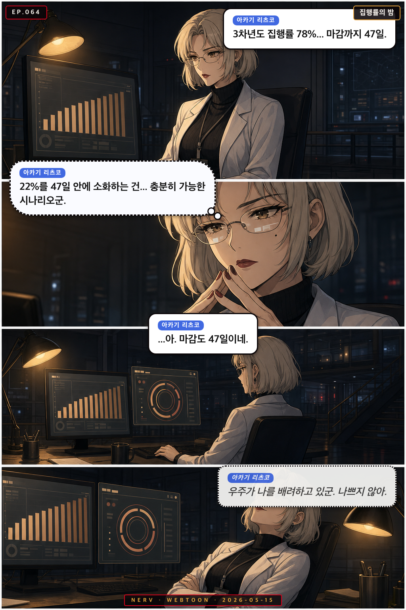
EP.064집행률의 밤
리츠코가 저녁 늦게 예산 집행률 그래프를 바라보며, 마감과 숫자 사이의 미묘한 균형을 혼자 음미한다
 EP.063
EP.063
아침형 인간의 증거
신지가 이른 아침 연구실에 혼자 남아 있는 리츠코를 발견하고, 사실은 어젯밤부터 있었다는 걸 깨닫는다
 EP.062
EP.062
반려의 이유
레이가 conversion-quality-checker의 반려 로그를 조용히 들여다보다, 예상치 못한 PDF의 정체를 발견한다
 EP.061
EP.061
초고의 온도
마리가 아침 일찍 초고를 들고 레이에게 달려가지만, 레이의 반응은 언제나처럼 조용하고 깊다
 EP.060
EP.060
지식이 된 고민
레이가 wiki에 새 개념 페이지가 생겼다고 알리자, 신지는 그 출처 논문들이 모두 자신이 읽어온 것임을 발견한다
 EP.059
EP.059
위키가 기억하는 이름
레이가 wiki에 새 개념 페이지가 생겼다고 알리자, 아스카가 품질을 따지다 그 페이지의 주인공이 자신임을 알아버린다
 EP.058
EP.058
개념 한 페이지의 무게
리츠코가 아침에 wiki에 새로 생성된 개념 페이지를 발견하고, 지식이 쌓이는 과정을 수치로 환산해보다 멈춰버린다
 EP.057
EP.057
지식이 자라는 밤
레이가 wiki-compounder가 새 개념 페이지를 만들었다고 조용히 알리자, 미사토와 리츠코가 화면을 들여다보며 각자의 방식으로 감탄한다
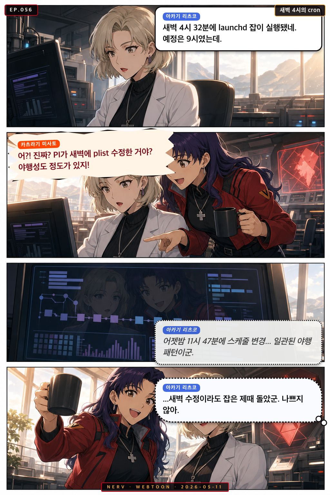
EP.056새벽 4시의 cron
리츠코가 예정보다 일찍 실행된 launchd 로그를 발견하고, 미사토와 함께 PI의 새벽 작업 흔적을 읽어낸다
 EP.055
EP.055
첫 번째 페이지
레이가 wiki에 새 개념 페이지가 생성되는 순간을 홀로 지켜보며, 지식이 쌓이는 고요한 기쁨을 느낀다
 EP.054
EP.054
링크의 미로
마리가 Obsidian 위키 링크를 타고 들어갔다가 출구를 잃고, 아스카와 미사토가 각자의 방식으로 반응한다
 EP.053
EP.053
0.91의 밤
카오루가 IRB 결과 대기 중 arXiv 추천 작업을 묵묵히 이어가며, 숫자 속에서 작은 평온을 찾는다
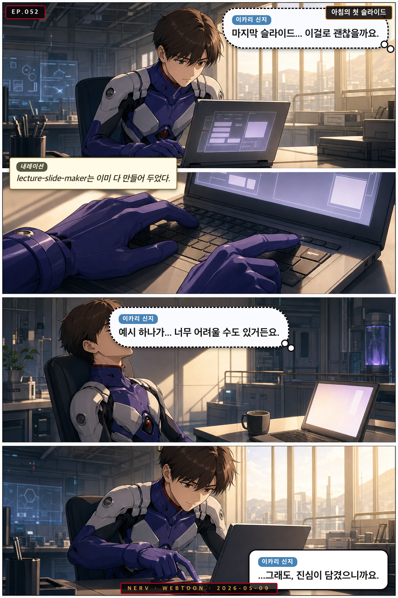
EP.052아침의 첫 슬라이드
신지가 이른 아침 강의 슬라이드를 혼자 완성하고, 제출 버튼 앞에서 한참을 망설인다
 EP.051
EP.051
5,847개의 오늘
레이가 늦은 저녁 wiki-compounder가 만든 새 개념 페이지를 조용히 바라보며, 에이전트들을 어린 동생처럼 생각하고 있음을 깨닫는다
 EP.050
EP.050
대기 중의 품질관리
IRB 심사 결과를 기다리는 아스카, 새벽부터 메일함을 새로고침하며 완벽한 신청서를 자신하지만 긴장은 숨길 수 없다
 EP.049
EP.049
반려의 밤
신지가 conversion-quality-checker에게 PDF를 반려당하고 당황하자, 아스카가 나타나 품질 기준을 열정적으로 설명해 준다
 EP.048
EP.048
커밋 메시지의 미학
마리가 저녁에 git commit 메시지를 쓰다가 학술 산문과 시 사이에서 갈팡질팡한다
 EP.047
EP.047
오탐의 시학
MAGI 순찰 알림이 울리자 마리는 오탐이라는 단어에서 시 한 편을 떠올리고, 결국 Discussion에 몰래 은유를 끼워 넣는다
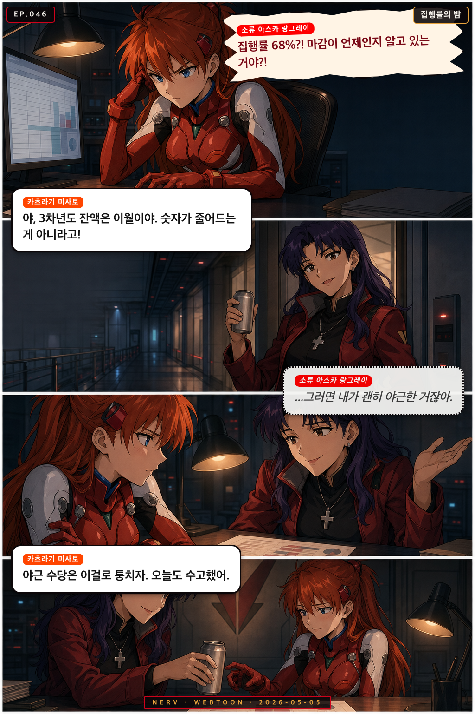
EP.046집행률의 밤
마감이 코앞인 저녁, 아스카가 예산 집행률 수치를 들고 따지고, 미사토는 특유의 호탕함으로 상황을 마무리한다
 EP.045
EP.045
대기의 기술
IRB 심사 결과를 기다리는 아침, 레이는 wiki를 갱신하고 아스카는 academic-style-checker 점수에 울분을 토한다
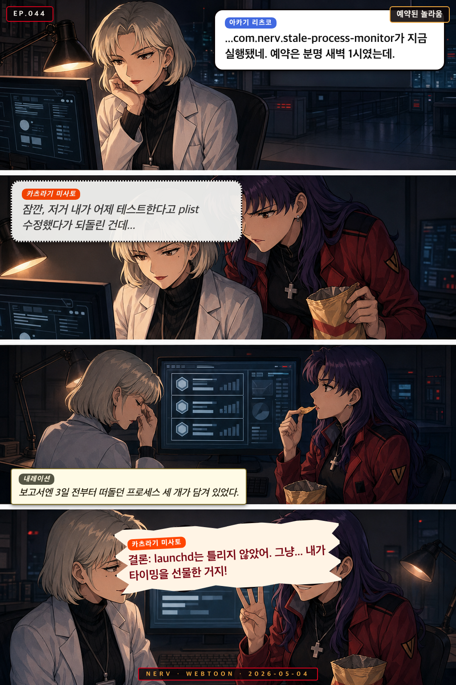
EP.044예약된 놀라움
밤 11시에 갑자기 울린 launchd 알림에 리츠코가 당황하고, 미사토가 엉뚱한 해결책으로 상황을 마무리한다
 EP.043
EP.043
스탯의 파도
아침 포토카드 스탯이 갑자기 출렁이자 미사토가 패닉하고, 마리는 문학적으로 위로하며, 카오루가 조용히 진실을 밝힌다
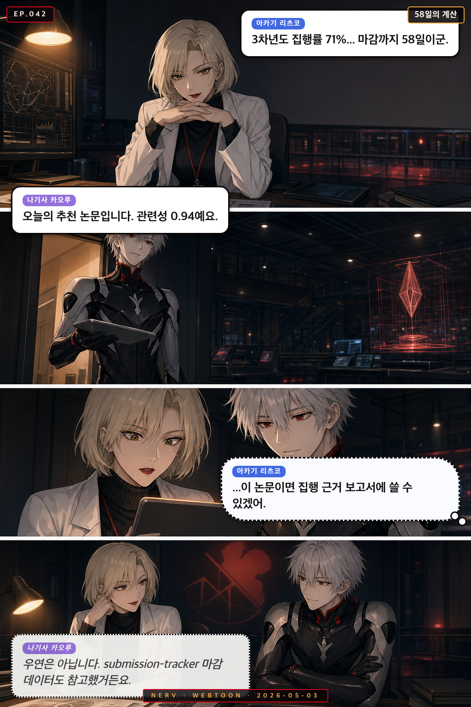
EP.04258일의 계산
늦은 밤 집행률 앞에 고심하는 리츠코에게, 카오루가 조용히 건넨 논문 한 편이 예상치 못한 해법이 된다
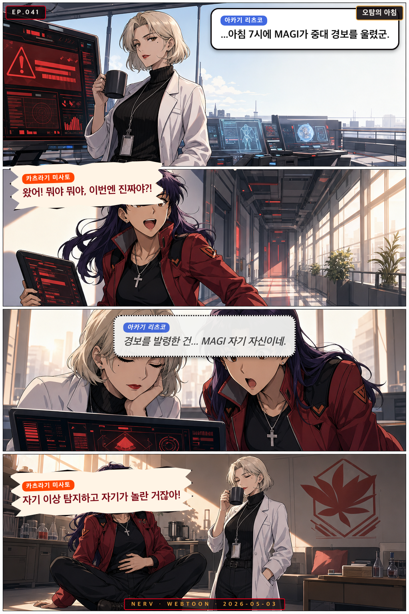
EP.041오탐의 아침
MAGI 순찰이 이른 아침 중대 경보를 울렸지만, 리츠코와 미사토가 확인해보니 범인은 다름 아닌 파이프라인 자기 자신이었다
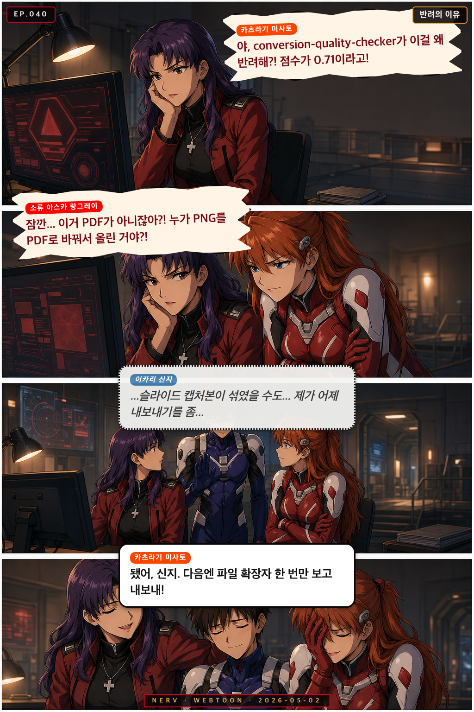
EP.040반려의 이유
conversion-quality-checker가 이상한 PDF를 반려하자 미사토가 따지고, 아스카가 왜인지 알아버리고, 신지는 조용히 수습한다
 EP.039
EP.039
위키가 자란 밤
레이가 wiki에 새 개념 페이지가 생겼다고 조용히 알리자, 아스카는 품질을 따지고, 미사토는 축배를 든다
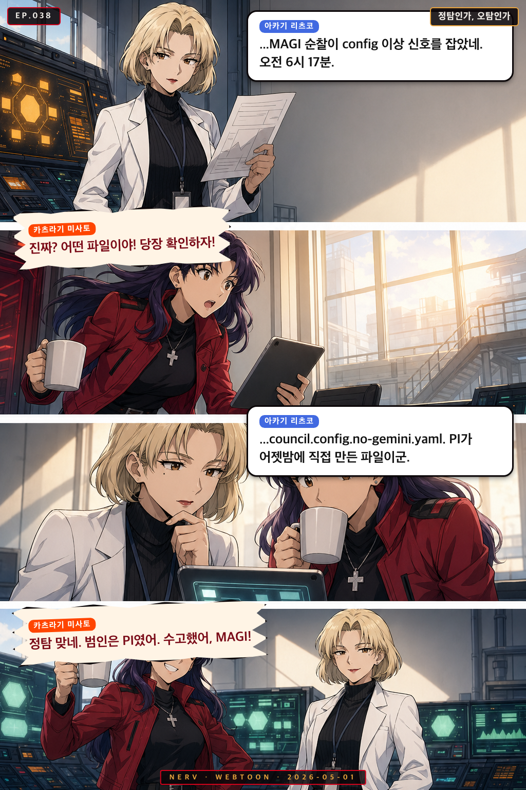
EP.038정탐인가, 오탐인가
MAGI 순찰이 아침부터 이상 신호를 잡아냈지만, 리츠코와 미사토가 확인해보니 범인은 예상 밖의 존재였다
 EP.037
EP.037
예정에 없던 밤
밤 11시, launchd가 갑자기 슬라이드 생성을 시작하자 신지가 당황하고, 레이는 평소처럼 조용히 이유를 안다
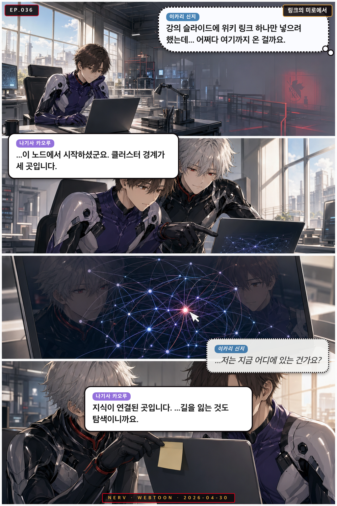
EP.036링크의 미로에서
신지가 강의 슬라이드에 넣을 위키 링크를 찾다 Obsidian 백링크의 미로에 빠지자, 카오루가 조용히 출구를 안내한다
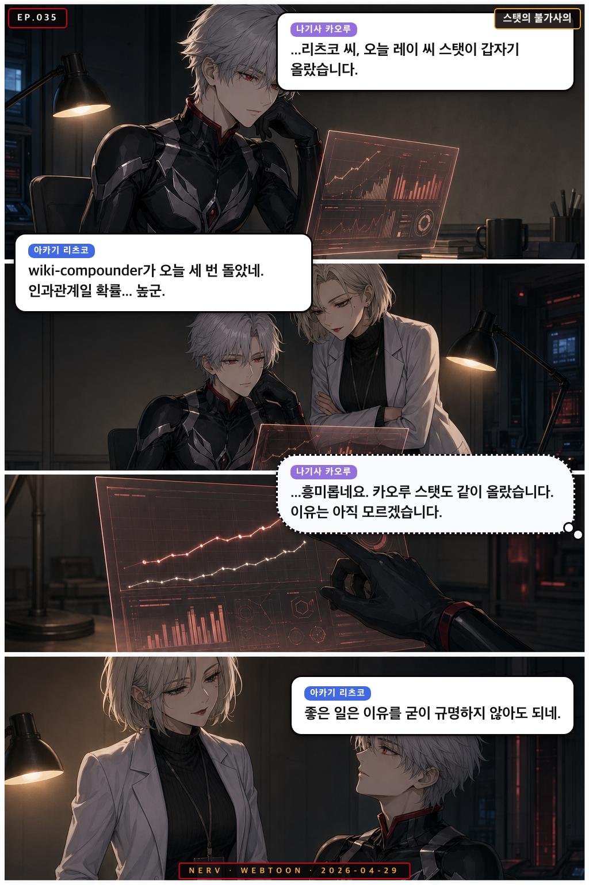
EP.035스탯의 불가사의
카오루가 photocard 스탯 수치의 갑작스러운 변동을 보고하자, 리츠코는 특유의 분석적 관조로 받아넘긴다
 EP.034
EP.034
집행률의 아침
미사토가 연구비 집행률 경보를 아침에 받고 패닉하자, 카오루는 논문을 추천하고 레이는 wiki로 답한다
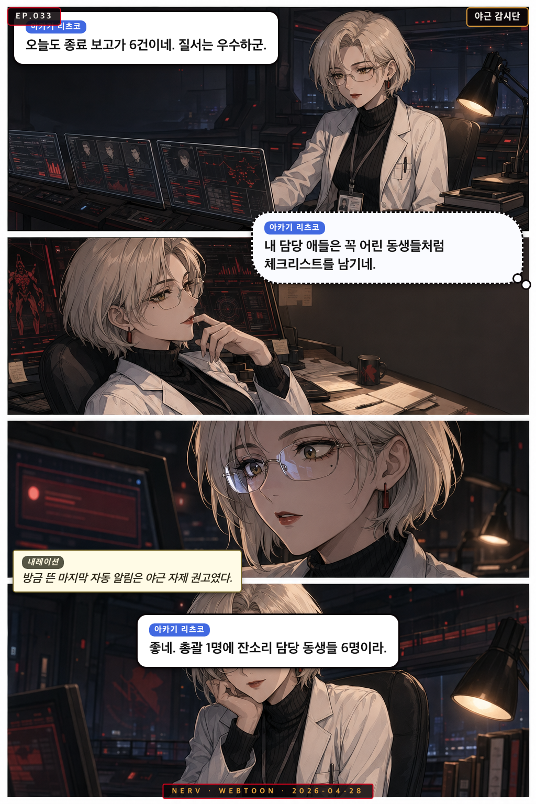
EP.033야근 감시단
늦은 연구실에서 리츠코는 자기 담당 에이전트들이 꼭 어린 동생들처럼 굴고 있음을 새삼 실감한다
 EP.032
EP.032
동생들의 아침 점호
아스카가 자기 에이전트들의 품질 점수를 아침부터 점검하자, 마리와 카오루도 각자의 방식으로 '동생들'을 챙긴다
 EP.031
EP.031
위키의 탄생을 목격하다
레이가 wiki-compounder가 새 개념 페이지를 생성하는 순간을 조용히 지켜보고, 미사토와 리츠코가 그 의미를 제각각 해석한다
 EP.030
EP.030
집행률의 아침
미사토가 연구비 집행률 경고를 발견하고 레이를 깨우러 달려가지만, 레이는 이미 알고 있었다
 EP.029
EP.029
예정에 없던 저녁 수업
launchd가 한밤중에 갑자기 lecture-slide-maker를 깨우고, 신지는 당황하지만 레이와 마리는 각자의 방식으로 받아들인다
 EP.028
EP.028
커밋 메시지의 품격
리츠코가 작업 로그의 커밋 메시지 목록을 점검하다 황당한 문장을 발견하고, 아스카와 함께 진지하게 토론을 시작한다
 EP.027
EP.027
예정에 없던 점심
카오루가 launchd 로그를 들여다보다 예상 밖 실행 시각을 발견하고, 조용히 그 이유를 추적한다
 EP.026
EP.026
아침의 복리
레이가 이른 아침 wiki 링크 수를 조용히 확인하다, 숫자 하나에 멈추어 선다
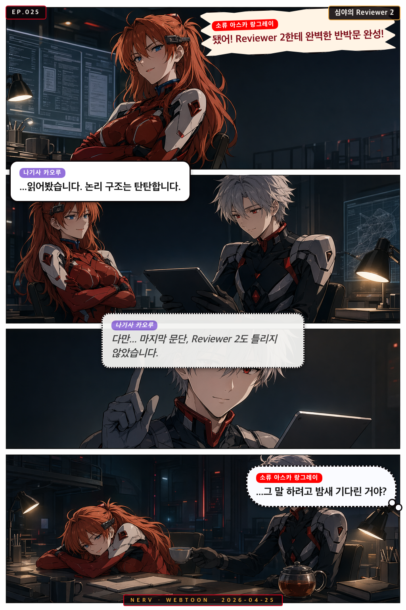
EP.025심야의 Reviewer 2
아스카가 reviewer 2 반박문을 써놓고 카오루에게 검토를 맡기자, 카오루의 조용한 한 마디가 심야를 울린다
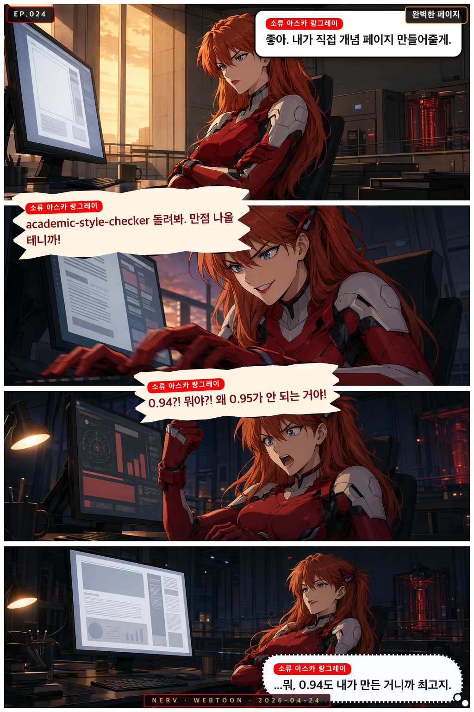
EP.024완벽한 페이지
아스카가 wiki에 새 개념 페이지를 생성하다 점수에 집착하며 혼자 저녁을 불태운다
 EP.023
EP.023
에이전트 자랑
마리가 자기 담당 에이전트들을 어린 동생처럼 칭찬하자, 카오루가 자신의 에이전트들도 조용히 꺼내 든다
 EP.022
EP.022
아침의 wiki
신지가 아침 일찍 연구실에 나타나자 레이가 밤새 wiki를 갱신했다고 조용히 알린다
 EP.021
EP.021
IRB 대기 중
심야 연구실에서 레이가 IRB 결과 메일함을 조용히 열어보다 카오루가 새 논문 클러스터를 발견하며 둘만의 방식으로 기다림을 견딘다
 EP.020
EP.020
논문과 밤의 언어
심야 연구실에서 마리가 arXiv 추천 논문을 또 열어보다가 의외의 제목에 감탄하고, 신지가 그 논문이 강의에 쓸 수 있을지 조심스럽게 묻는다
 EP.019
EP.019
오늘의 두 번째 의외성
심야 연구실에서 마리가 arXiv 추천 논문을 또 열어보다가 어이없는 제목을 발견하고, 신지가 조심스럽게 그 논문의 의미를 꺼낸다
 EP.018
EP.018
오늘의 추천: 예상 밖
심야에 마리가 daily-paper-recommender의 추천 논문을 열어보다가 황당한 제목에 멈추고, 신지가 조심스럽게 읽어보더니 의외의 감상을 꺼낸다
 EP.017
EP.017
첫 아침의 작전
리츠코가 새 웹툰 채널 런칭 공지를 보고 묘한 기분에 잠기자, 미사토가 커피로 위로한다
 EP.016
EP.016
동생들이 제일 바빠
저녁 무렵, 카오루·리츠코·미사토가 각자 담당 에이전트들의 하루 활동 로그를 보며 동생 자랑을 늘어놓는다
 EP.015
EP.015
예상 가능한 알림이었어
하루를 마무리하려는 저녁, submission-tracker가 3주 전 논문의 마감 알림을 뒤늦게 보내오자 아스카는 분노하고 리츠코는 담담히 납득한다
 EP.014
EP.014
링크는 계속된다
저녁 무렵, 아스카가 Obsidian 백링크 미로를 '이번엔 완전히 정복했다'고 선언하자 리츠코가 조용히 새 노트를 하나 더 만든다
 EP.013
EP.013
링크의 미로에서 살아남기
아스카가 Obsidian 위키 백링크를 정리하다 무한 루프에 빠지고, 리츠코는 그게 사실 설계대로라고 담담히 알려준다
 EP.012
EP.012
launchd는 제멋대로야
점심시간, launchd가 예정에 없던 타이밍에 작업을 돌려버리자 신지는 당황하고, 아스카는 분노하고, 리츠코는 그냥 납득한다
 EP.011
EP.011
패턴의 발견
점심시간, 아스카가 자기 에이전트를 동생 자랑하듯 떠들다 레이의 note-linker가 자신을 '완벽주의 패턴'으로 분류했음을 발견한다
 EP.010
EP.010
동생들의 점심 평가표
아스카가 자기 에이전트 점수표를 자랑스럽게 내밀자, 레이가 조용히 wiki-compounder의 오늘 실적을 꺼낸다
 EP.009
EP.009
동생들의 점심 자랑
아스카가 자기 에이전트들의 점수를 동생 자랑하듯 떠들다가, 레이의 조용한 숫자 한마디에 입을 다문다
 EP.008
EP.008
동생들의 점심시간
점심 시간, 아스카가 자기 에이전트들의 점수를 자랑하다가 레이의 조용한 한마디에 멈칫한다
 EP.007
EP.007
커밋 메시지의 온도
점심 시간, 레이가 git log를 바라보다 자신의 커밋 메시지들이 계절처럼 변해왔음을 조용히 알아챈다
 EP.006
EP.006
커밋 메시지의 철학
점심 시간, 레이가 git log를 보다가 자신의 커밋 메시지 패턴에서 뜻밖의 일관성을 발견한다
 EP.005
EP.005
점심의 한 단어
점심을 잊은 채 git log를 훑던 레이가, 자신의 커밋 메시지 한 단어를 바라보며 조용히 미소 짓는다
 EP.004
EP.004
분류할 수 없는 것
레이가 wiki-compounder의 새 개념 페이지를 점검하다가, 태그로 분류되지 않는 무언가를 발견한다
 EP.003
EP.003
오늘의 커밋 메시지
레이가 wiki-compounder의 커밋 메시지를 읽다가 그 무감각한 정직함에 잠시 멈춘다
 EP.002
EP.002
첫 아침의 작전
리츠코가 새 웹툰 채널 런칭 공지를 보고 묘한 기분에 잠기자, 미사토가 커피로 위로한다
 EP.001
EP.001
03시 17분의 시
마감 전날 밤 홀로 글을 쓰던 마리 앞에 launchd가 예상 밖 시간에 깨어난다. 카오루의 침착한 로그 분석이 따뜻한 반전을 부른다.